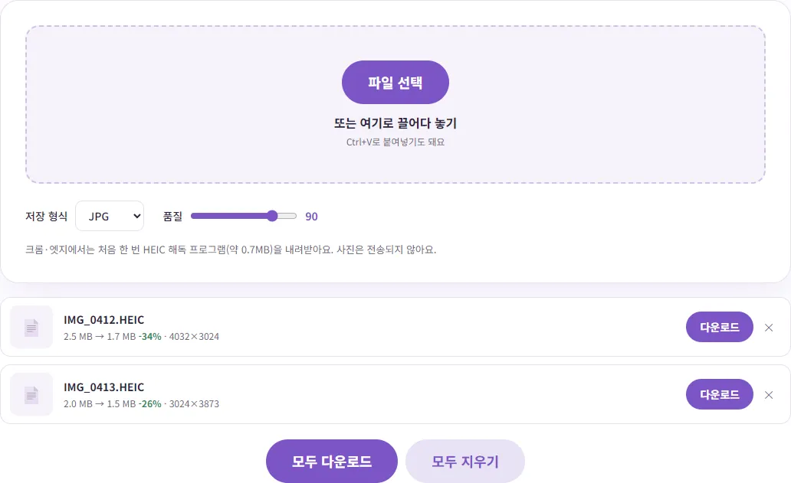
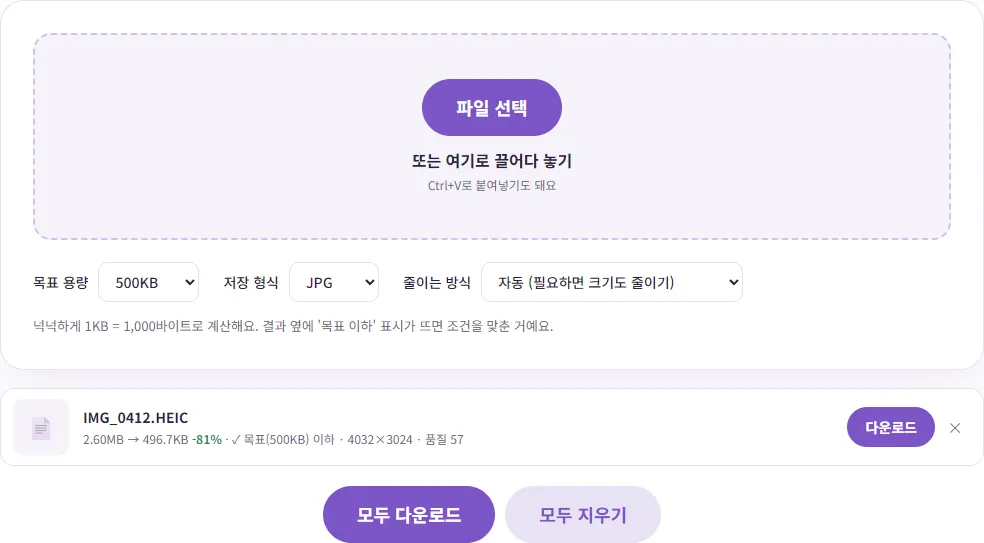

아이폰 사진(HEIC)이 PC에서 안 열릴 때, 어떻게 해야 할까요?
아이폰으로 찍은 사진을 PC로 옮겼더니 파일 이름 끝이 .HEIC이고, 더블클릭해도 안 열리거나 사이트에 올리면 '지원하지 않는 형식'이라고 나와 당황하셨죠? 이 글에서는 왜 그런지부터, 이미 찍은 사진을 JPG로 바꾸는 법, 앞으로 아예 JPG로 찍는 법까지 상황에 맞게 골라 쓸 수 있도록 정리했어요.
HEIC가 뭐길래 안 열릴까요?
HEIC는 아이폰이 기본으로 쓰는 사진 저장 형식이에요. 정식 이름은 HEIF(고효율 이미지 파일 형식)이고, 아이폰에서는 파일 이름 끝에 .HEIC가 붙어요. 애플 지원 문서에 따르면 이 형식은 iOS 11부터 쓰이기 시작했고, 아이폰 7 이후 모델에서 이 형식으로 촬영할 수 있어요. 같은 사진을 더 작은 용량으로 저장할 수 있어서 휴대폰 저장 공간을 아끼는 데 유리하죠.
문제는 이 형식을 모든 곳이 읽지는 못한다는 거예요. 아이폰과 맥에서는 아무렇지 않게 열리지만, 윈도우 PC는 환경에 따라 별도 확장 프로그램이 있어야 열리고, 회사 메일이나 쇼핑몰·관공서·채용 사이트의 업로드 칸은 JPG와 PNG만 받는 곳이 많아요. 그래서 "사진이 깨졌나?" 싶지만, 대부분은 사진이 망가진 게 아니라 형식이 맞지 않는 것뿐이에요.
내 사진이 HEIC인지 확인하는 법
윈도우 파일 탐색기에서 '파일 확장명' 보기를 켜면 파일 이름 끝에 .HEIC 또는 .heic가 보여요. 확장자를 켜는 메뉴는 윈도우 버전마다 위치가 조금 달라서, 탐색기 위쪽 '보기' 메뉴에서 '파일 확장명'을 찾아 보세요. 확장자가 HEIC라면 아래 방법 중 하나로 해결할 수 있어요.
방법 1. 이미 찍은 HEIC 사진을 JPG로 바꾸기
이미 PC로 옮겨 놓은 사진이 있다면 JPG로 바꾸는 게 가장 빨라요. 벤토툴의 HEIC → JPG 변환은 사진을 서버로 보내지 않고 내 브라우저 안에서 바꿔 주기 때문에, 가족사진이나 서류 사진처럼 남에게 보이기 싫은 사진도 부담 없이 쓸 수 있어요.
- 저장 형식을 고르세요. 보통은 JPG를 고르면 되고, 품질은 기본값 90 그대로 두면 충분해요.
- '파일 선택'을 누르거나 HEIC 파일을 화면에 끌어다 놓으세요. 여러 장을 한꺼번에 올려도 돼요.
- 변환이 끝나면 한 장씩 '다운로드'를 누르거나, '모두 다운로드'로 한꺼번에 받으세요. 여러 장이면 ZIP 파일 하나로 묶여 내려와요.
직접 해 보니, 4032×3024 크기의 HEIC 사진 두 장(2.5MB, 2.0MB)을 크롬에서 올렸을 때 약 4초 만에 둘 다 JPG로 바뀌었어요. 크롬과 엣지는 HEIC를 스스로 못 읽어서 처음 한 번은 해독 프로그램(약 0.7MB)을 내려받느라 조금 더 걸리고, 그다음부터는 바로 바뀌어요. 가로세로 크기는 원본과 똑같이 유지됐어요.

품질은 숫자가 높을수록 선명하고 용량이 커져요. 90이면 눈으로 원본과 차이를 느끼기 어렵고, 메일로 여러 장 보내야 해서 용량이 신경 쓰이면 80 정도로 낮춰도 괜찮아요. 투명한 부분이 필요한 그림이 아니라면 PNG보다 JPG가 훨씬 가벼워요.
방법 2. 앞으로는 처음부터 JPG로 찍기
회사 업무나 중고거래처럼 사진을 PC나 사이트에 자주 올린다면, 아예 아이폰 카메라 설정을 바꾸는 방법도 있어요. 애플 지원 문서에 나온 경로는 이래요.
- 아이폰 '설정'을 열고 '카메라'를 누르세요.
- '포맷'을 누르세요.
- '높은 호환성'을 고르세요. 원래대로 돌리려면 '고효율성'을 고르면 돼요.
'높은 호환성'으로 바꾸면 그다음부터 찍는 사진은 JPG로 저장돼요. 다만 두 가지는 알아 두세요. 첫째, 이미 찍어 둔 HEIC 사진이 JPG로 바뀌지는 않아요. 둘째, HEIC가 용량을 아끼는 형식이었던 만큼 같은 사진이 더 큰 용량으로 저장돼서 아이폰 저장 공간이 더 빨리 찰 수 있어요. 저장 공간이 넉넉하지 않다면 방법 1이나 방법 3이 나을 수 있어요.
방법 3. 옮기거나 보낼 때 자동으로 바뀌게 하기
아이폰에는 사진을 다른 기기로 옮길 때 호환되는 형식으로 바꿔 주는 기능이 이미 들어 있어요. 애플 지원 문서에 따르면 USB 케이블로 PC나 맥에 사진을 가져올 때 기본적으로 JPEG 같은 호환 형식으로 변환되고, 원본 형식 그대로 옮기고 싶을 때만 '설정 > 앱 > 사진'의 맨 아래쪽에서 '원본 유지'를 고르라고 안내하고 있어요. 그러니 PC로 옮겼는데 HEIC가 그대로 넘어왔다면, 이 항목이 '원본 유지'로 되어 있지 않은지 확인해 보세요. 반대쪽 선택지인 '자동'으로 두면 옮길 때 변환돼요. iOS 버전에 따라 '앱' 단계 없이 '설정 > 사진'에 바로 보이기도 해요.
또 에어드롭, 메시지, 메일로 공유할 때 받는 쪽 기기가 최신 형식을 지원하지 않으면 JPEG처럼 더 호환되는 형식으로 보내질 수 있다고 안내돼 있어요. 다만 이건 받는 기기와 보내는 방법에 따라 달라서, 항상 JPG로 간다고 믿기보다는 받은 파일의 확장자를 한 번 확인하는 게 안전해요. iCloud 사진을 쓰고 있다면 원본이 아이폰에 내려받아져 있어야 PC로 가져올 수 있다는 점도 함께 기억해 두세요.
상황별로 이렇게 고르세요
| 지금 상황 | 추천 방법 |
|---|---|
| 이미 PC에 HEIC 사진이 잔뜩 있어요 | 방법 1. 한꺼번에 올려서 JPG로 바꾸고 '모두 다운로드' |
| 지금 당장 사이트에 사진 한 장만 올려야 해요 | 방법 1. 바꾼 JPG를 바로 올리기 |
| 업무상 사진을 매일 PC로 옮겨요 | 방법 2(앞으로 JPG로 찍기) 또는 방법 3(옮길 때 '자동') |
| 아이폰 저장 공간이 빠듯해요 | 카메라는 '고효율성' 그대로 두고, 필요할 때만 방법 1·3 |
| 사이트가 '○○KB 이하'만 받아요 | 방법 1 뒤에 용량 맞추기(아래 주의점 참고) |
바꾸기 전에 알아 두면 좋은 점
촬영 날짜·위치 정보는 빠져요
사진 파일 안에는 찍은 날짜, 휴대폰 기종, 위치(GPS) 같은 정보가 함께 저장되는데, 이걸 EXIF라고 해요. 벤토툴로 변환한 JPG에는 이 정보가 들어가지 않아요. 실제로 GPS 위치와 촬영 날짜가 들어 있는 HEIC 파일을 변환해서 결과 JPG를 확인해 보니, 위치·날짜·기종 정보가 모두 비어 있었어요. 집 사진을 중고거래 글에 올리거나 모르는 사람에게 보낼 때는 오히려 안심되는 부분이에요. 반대로 사진을 날짜순으로 정리하는 앨범 프로그램을 쓴다면, 변환한 파일은 촬영일 대신 저장한 날짜로 정렬될 수 있으니 원본 HEIC도 함께 보관해 두세요.
업로드 용량 제한이 있다면 한 번 더
휴대폰 사진은 JPG로 바꿔도 보통 1MB가 넘어요. '사진은 500KB 이하'처럼 용량 제한이 있는 곳이라면 사진 용량 KB 맞추기를 쓰면 돼요. 이 도구는 HEIC 파일도 바로 받아서, 변환과 용량 줄이기를 한 번에 끝낼 수 있어요. 같은 HEIC 사진(약 2.6MB)을 500KB 목표로 넣어 보니 가로세로 크기는 그대로 둔 채 496.7KB JPG가 나왔어요. 용량 조건을 맞추는 자세한 방법은 '사진은 ○○KB 이하' 오류 해결법에 따로 정리해 두었어요.

원본은 지우지 마세요
변환한 JPG는 원본을 다시 저장한 파일이라 아주 조금이라도 화질 손실이 생겨요. 나중에 크게 인화하거나 다시 편집할 일이 있을 수 있으니, 원본 HEIC는 아이폰이나 클라우드에 그대로 남겨 두는 걸 추천해요.
참고한 자료
글에서 소개한 도구, 회원가입 없이 바로 써 보세요.
📱 HEIC JPG 변환 (아이폰 사진) 바로 쓰기